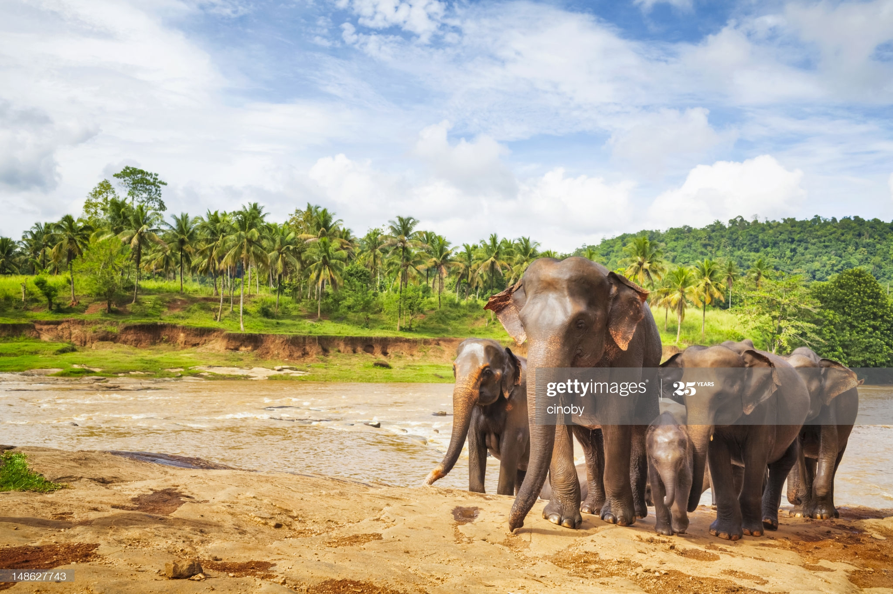

and have the highest body point on the head. The tip of their trunk has one finger-like process.
Their back is convex or level. It has become commonplace to refer to the Borneo elephant as a ‘pygmy’ subspecies,
although adult elephants
of Sabah of both genders are similar in height to their counterparts in Peninsular Malaysia. Five measurements >P>of the skull of a fully adult female elephant from Gomantong Forest
Reserve were slightly smaller (72–90%)
than comparable dimensions averaged for two Sumatran skulls. Few available measurements show that they
are of similar size to other populations of the Sunda subregion.[2)Morphological measurements of fifteen captive
elephants from Peninsular Malaysia and of six elephants from
2006, and repeated three times for each elephant and averaged.
There was no significant difference in any of the characters between the two captive populations.[5]They are also remarkably tame and passive, another reason
some scientists think they descended from a domestic collection
